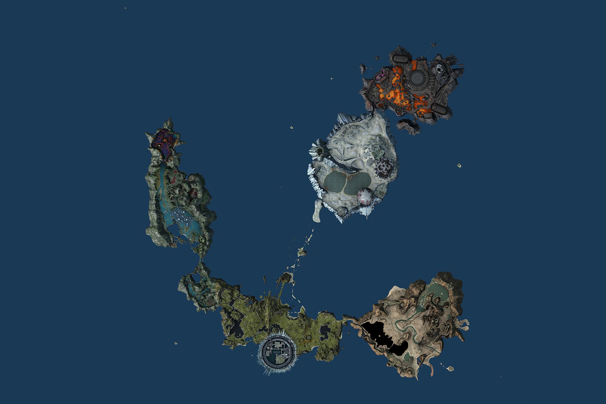
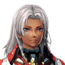

Xenoblade Chronicles X: Definitive Edition
Exploring the five continents of 惑星ミラ and building up the survivor city of NLA spans dozens of overlapping systems, from ground O.C.ギア chains and ドール frames to multi-chapter quest arcs and regional probe networks. Having a single companion checklist keeps that scale comfortable so you can roam freely while knowing which milestones unlock key quality-of-life upgrades.
Every completable quest, collectible, build milestone, and conversation across this guide carries a checkbox saved automatically in your browser. Terms default to Japanese with English hover tooltips, and the floating bottom-right toggle swaps all game names between Japanese and English whenever you wish. Story twists and late-game recruits remain tucked behind click-to-reveal spoiler masks until you choose to view them.

Walkthrough & Progression
Story chapters gate your biggest movement and combat upgrades, including party swapping, O.C.ギア, your ドールライセンス exam, and aerial flight. Use these four pages to get settled in NLA, follow a smooth chapter-by-chapter play order, check boss elemental resistances, and stay ahead of time-sensitive choices.
 Beginner Tips
Beginner Tips
Early settings, division setup, field exploration shortcuts, and resource priorities.
Play Order
Chronological chapter-by-chapter routing from Prologue through post-story endgame.
Main Story
Spoiler-free steps, boss elemental resistances, and newly unlocked quests per chapter.
 Missables
Missables
Pre-Chapter 9 Heart-to-Hearts, mutually exclusive quest branches, and NPC survival choices.
Missions & Quest Chains
Side missions bring new alien species into NLA, open fresh アームズカンパニー at the shop terminal, and teach your protagonist's strongest Signature Arts. Browse individual missions by chapter unlock or trace long multi-chapter storylines from their opening rumor to their finale.
 Affinity Missions
Affinity Missions
All 58 キズナクエスト for companion recruitment, Signature Arts, and Skell Flight.
 Side Quests
Side Quests
All 194 ノーマルクエスト ordered by unlock chapter with shareable anchors.
 Quest Chains
Quest Chains
Multi-chapter arcs including シークレットオーダー, ミーア, and デフィニア殲滅.
Builds, Combat Systems & Exploits
Smart skill synergies, weapon attributes, and デバイス matter far more than character level when facing high-tier オーバード. These five pages turn complex combat math into step-by-step class paths, ready-to-use companion loadouts, Skell recipes, and fast farming loops.
 Cross Build
Cross Build
Five-stage インサイドブレイカー progression into Infinite O.C.ギア.

Party Builds
Optimal Arts, Skills, weapons, and endgame setups for all 22 playable companions.
Skell Builds
Frame progression from Lv. 20 through アレス90 and custom Lv. 60 one-shot frames.
 Mechanics
Mechanics
O.C.ギア color combos, damage multipliers, appendage hardness, and ドール保険.
 Exploits
Exploits
2-minute Class mastery, マテリアルチケット loops, FN Site revenue, and Lv. 60 gear farming.
Collectibles, FrontierNav & Heart-to-Hearts
Surveying Mira rewards your entire roster with バトルポイント, passive ミラニウム and Credits income, rare crafting ores, and deeper companion affinity. Use these regional trackers to log field crystals, optimize probe chains, hunt all 99 plushies, and clear every city conversation.
 Collectopedia
Collectopedia
All 300 regional collectibles, spawn zones, and category ホロフィギュア rewards.
 FrontierNav
FrontierNav
All 104 FNスポット, 42 Sightseeing Spots, and 100k Miranium / 130k Revenue layouts.
 Lobsters
Lobsters
All 99 ロブスターベイビー across New LA districts and the Ma-non Ship.
Heart-to-Hearts
All 102 キズナトーク with heart ranks, hours, and Barracks pet requirements.